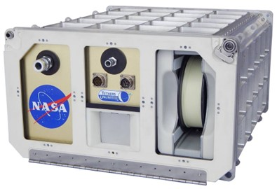

This article presents the adaptation of current 3d printer technology(also known as
additive manufacturing) into a form able to be used in space. This was seen through an
analysis of the process and the materials used in the process. Additionally, this article
also asks about certain ethical aspects to this technology that do not currently have a definitive
answer.
Introduction
When people commonly think of 3D printers, they usually think of home printers which
they use to print small parts that in some cases items they could have bought for
cheaper if they went to a store. NASA has begun improving 3D printer technology in
order to be used in space. An issue NASA has to address frequently when it comes to
launches, is how to bring the most weight into space, while having the rocket able to
escape the earth’s pull. A 3D printer would allow equipment to not be brought up all
together, but to be printed on the spot in the ISS. Furthermore, incidents such as the
one on November 1st 2023 (USA Today, 2023) when, during a spacewalk, the astronauts lost a tool bag causing
them to be unable to conduct repairs until another set was sent in a supply run through
a new launch. The process of launching a rocket into space is costly and takes time due
to the amount of preparation that needs to be done, which usually takes up to several
weeks, and if the tools lost were urgent this would be a critical problem for the
astronauts. Thankfully, the tools lost didn’t cause much disruption and were replaced
on the 11th of November through a Space X resupply (USA Today, 2023). These types of situations
will be avoided with 3d printing technology as astronauts themselves will be able to produce
tools on demand without a need to wait for a resupply, provided that all space agencies
resolve certain engineering issues related to this technology which will be discussed
below.
Material analysis
The main concerns with this implementation of 3d printer technology is the type of
material to be make 3d printing efficient. NASA in their article stated that RTM370
composites are to be used, RTM370 being a polymer resin developed by NASA which
has high chemical and mechanical resistance. This equals to high durability and
material performance when temperatures rise above 300 degrees celsius.
Additionally, NASA reports that these polymers do not harm the environment through
their production process. One major disadvantage is the high cost machinery and
engineering process needed for producing this polymer. Consequently, RTM370 may
not be as cost effective for larger scale projects but other materials could be used for
this application (Seijas, M. (2024)) such as the ones illustrated in the table below
Seijas, M. (2024)., Table 1: Possible polymers that would be suitable for 3d printing in space
Material
Chemical Formula
Melting temperature (oC)
Glass transition temperature (oC)
Density (g/cm3)
Apium Peek 450
C19H14O3
343oC
143oC
1.320
Apium Peek 4000
C19H14O3
340oC
143oC
1.320
Kepstan Pekk-a
(-C6H4-O-C6H4-O-C6H4-CO-)n
308oC
159oC
1.261
Ultem 9085 PEI
(C37H24O6N2)n
340-360oC
217oC
1.270
As can be seen from the table above, these materials have a very high melting temperature and due to this high temperature they are also move able to resist UV radiation
allowing them to remain in use for longer without needing replacement.
Recycling
The 3d printing process can also be referred to as additive manufacturing. Given its
engineering process, objects are constructed layer by layer, allowing them, in theory to
be taken apart also layer by layer. This means that all materials used can be recycled
and recycled for future printing(National Academies of Sciences, Engineering, and Medicine (2014)).
In addition, NASA has developed a device that ‘enables recycling of scrap and waste plastics into
high-quality filament for 3D printers to enable sustainable in-situ manufacturing on the ISS and
future deep-space manned missions.’ called the the positrusion ISS Recycler (NASA (2017)) as shown below.

This ability to recycle and reuse materials in the ISS can ease concerns about the
amount of space junk created and orbiting debris around Earth.
Ethical engineering and industrial considerations
When new technologies are made, there are naturally concerns to their use. This is the
same with this technology, where there are several questions that serve as food for
thought, especially as this technology develops.
Firstly, how would the issue of open source designs be handled? In order for the 3d
printer to produce an construct, there must be a design supplied to it. Will these
designs be remade by each space agency or will there be open source designs available
to be used. On the topic of open source, will these 3d printers suitable for space be
given to other space agencies that haven’t developed the technology yet or will it be
kept privatised? If it is kept private, this will surely cause the agencies without the
technology to be unable to conduct their scientific mission as effectively as those with
it.
In addition, are engineers ethically obligated to thoroughly test 3d printed components
before development? Additive manufacturing is able to create complex lightweight
structures but as seen with current versions of this technology these designs need
thorough testing in order to guarantee their ability to survive in the intense conditions in
space. If this components are rushed it could cause major accidents, especially in the
sector of aerospace, where one small error can cause accidents to happen.
Lastly, can engineers prioritise the sustainability of the materials used in additive
manufacturing over its functionality? As mentioned above in the material analysis
section, NASA specifically, have some polymers which would be suitable for use on the
field but it’s been mentioned that they plan to try to use materials from the planet the
expedition is on, such as lunar regolith, which is the dust and crushed rock found on the
surface of planets and moons(Hall, C. (2024)) . Is mining planets to supply material ethical?
Should we harvest planets like we’ve done to Earth? These are questions that don’t have definitive
answers for this material alternative, and is an example of how sustainability should be considered.
Conclusion
In conclusion, 3d printing can be a technology that can make space travel and
exploration easier and more efficient and is becoming a reality. Although, as mentioned
in the article, the technology still has some ethical considerations that need to be fully
addressed in order to not cause inadvertent effects on others as a consequence.